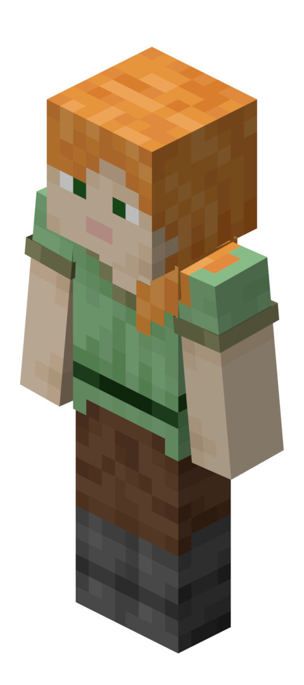
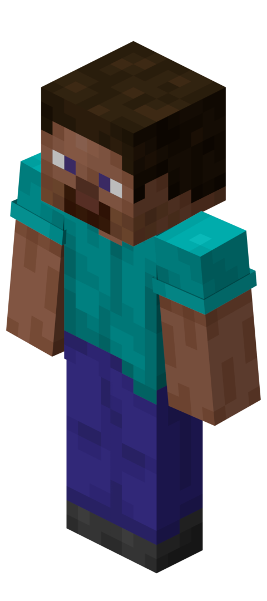

Minecraft est un jeu vidéo de type bac à sable créé en 2009. Il permet aux joueurs d’évoluer dans un monde entièrement composé de blocs. Ce jeu est connu dans le monde entier et est apprécié par des joueurs de tous les âges grâce à sa simplicité et à sa grande liberté.
Le monde de Minecraft est généré de manière aléatoire, ce qui signifie que chaque partie est différente. Les joueurs peuvent explorer de nombreux paysages comme des forêts, des plaines, des montagnes, des déserts, des océans et des grottes. Il est également possible de trouver des villages, des temples et d’autres structures mystérieuses.
Dans Minecraft, il est nécessaire de récolter des ressources pour progresser. Les joueurs peuvent couper du bois, miner de la pierre et chercher des minerais comme le fer, l’or ou le diamant. Ces ressources servent à fabriquer des outils, des armes et des objets utiles pour l’aventure.
La construction est l’un des aspects les plus importants de Minecraft. Les joueurs peuvent construire des maisons, des châteaux, des ponts ou même des villes entières. Chaque bloc peut être placé ou détruit, ce qui permet de créer presque tout ce que l’on imagine. Certains joueurs recréent même des monuments célèbres ou inventent leurs propres univers.
Minecraft propose plusieurs modes de jeu. Le mode Survie oblige le joueur à gérer sa vie et sa nourriture tout en se défendant contre des monstres comme les zombies, les squelettes ou les creepers. Le mode Créatif permet de construire librement avec un nombre illimité de blocs, sans danger.
En plus du monde principal, Minecraft propose d’autres dimensions. Le Nether est un monde dangereux rempli de lave et de créatures hostiles. L’End est une dimension spéciale où se trouve le dragon de l’End, le boss final du jeu.
Minecraft peut être joué seul ou à plusieurs grâce au mode multijoueur. Les joueurs peuvent collaborer pour construire, explorer et survivre ensemble. Le jeu est aussi utilisé dans le domaine de l’éducation, car il développe la créativité, la logique et le travail en équipe.
